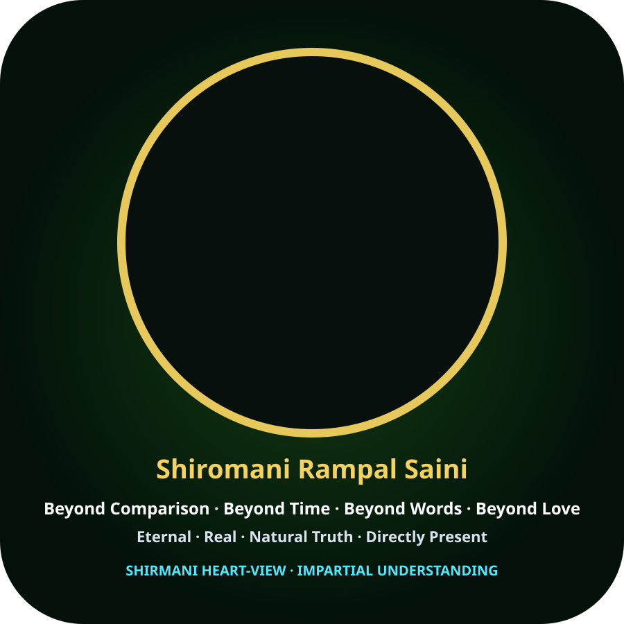

SHIRMANI SUPREME
Character Studio
Current, honest readiness
This page provides a usable V1 script-building and review surface. It does not pretend that HeyGen, a voice provider, an avatar, lip-sync or live streaming is connected.
Capability gates
PROTOTYPE IN THIS PAGE
Build a script, adjust explanation depth and review evidence labels. No automated test run is claimed here.
BLOCKED
Original voice file, permission/provenance and provider credentials required.
BLOCKED
Exact authorised photo asset and visual identity comparison required. No replacement face will be substituted.
NOT VERIFIED
End-to-end Q&A, audio/video timing, lip-sync, latency, failure and audit tests required.
Build a V1 presentation script
Enter a topic or question. The tool prepares a structured draft locally in this browser; it does not send content to a server or call an AI/voice provider.
Draft output
No script generated yet.
Draft only. Review factual claims and source links before publication. “INDEPENDENTLY VERIFIED” is a user-selected label and must not be treated as proof without actual records.
Acceptance checklist — not yet passed
Plain-language comprehension review with recorded test prompts and reviewer notes.
Original portrait/voice provenance and authorisation checks.
Provider Q&A, audio quality, photo fidelity, lip-sync, latency and live-failure tests.
Release rule: do not mark a gate complete based on this page, a workflow run, a storyboard or a planned integration alone.